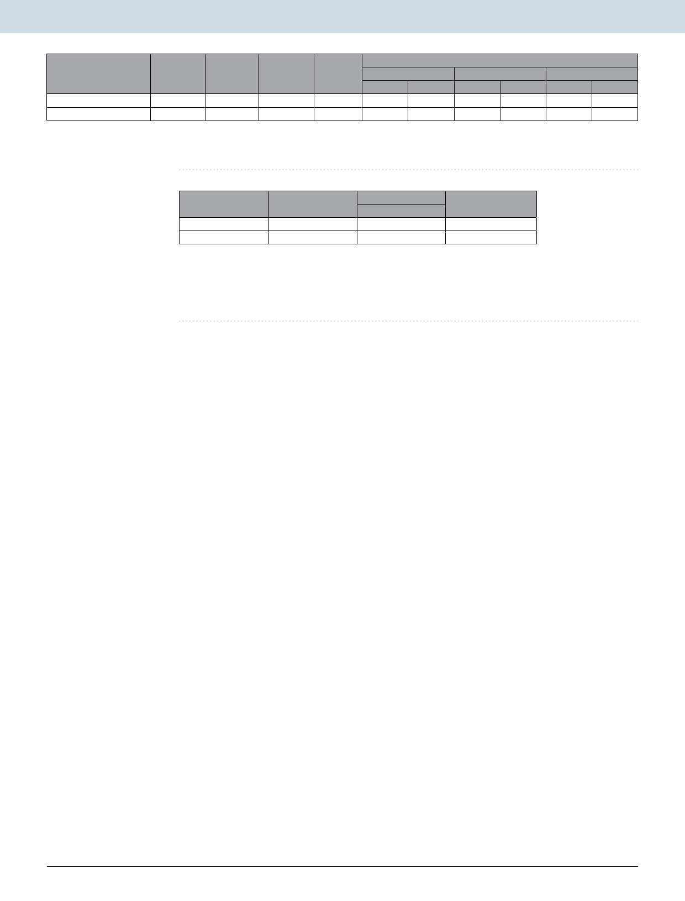

www.nature.com/scientificreports/
www.nature.com/scientificreports
Species
Staphylococcus aureus
Vibrio cholerae
Ampicillin
0.39
16
Kanamycin
25
32
Polymyxin
3125
3125
AuNPs-SL
50
50
MIC (µg ml−1)
Ampicillin + AuNPs-SL
FIC(A)
FIC(B)
0.195
25
50
16
Kanamycin + AuNPs-SL
FIC(A)
FIC(B)
6.25
6.25
16
12.5
Polymyxin + AuNPs-SL
FIC(A)
FIC(B)
390.65
12.5
390.65
6.25
Table 2. MIC of individual drugs ampicillin, kanamycin, polymyxin and AuNPs-SL and FIC of these drugs
with AuNPs-SL.
Species
Staphylococcus aureus
Vibrio cholerae
Ampicillin + AuNPs-SL
1(A)
2(I)
FICI
Kanamycin + AuNPs-SL
0.375(S)
0.75(PS)
Polymyxin + AuNPs-SL
0.375(S)
0.25(S)
Table 3. FICI of drugs ampicillin, kanamycin, polymyxin with AuNPs-SL. FIC of antibacterial A = MIC of
antibacterial A in combination/MIC of antibacterial A alone. FIC of antibacterialB = MIC of antibacterial B in
combination/MIC of antibacterial B alone. FIC index (FICI) = FIC of antibacterial A + FIC of antibacterial B.
FICI < 0.5 synergy(S), 0.5 ≤ FICI < 1 partial synergy(PS), FICI = 1 additive(A), 2 ≤ FICI < 4 indifferent(I), and
4 < FICI antagonism.
antimicrobial activity but its cytotoxicity limits its application to human cell lines41. However gold nanoparticles
are reported to least toxic nanoparticles among other metallic nanoparticles. Considering these points sopho-
rolipid capped gold nanoparticles were synthesized in single step procedure that imposes antimicrobial property.
This biosynthesis method for synthesizing AuNPs-SL has a distinct advantage over chemical synthetic techniques
such as high efficiency, biocompatibility, ecofriendly and low toxicity to the environment. As per the available
knowledge, we are the first to report the formation of gold nanoparticles synthesized directly from sophorolipid.
UV visible absorbance spectra in the range of 530–540 nm confirmed the surface plasmon resonance of bio-
synthesized gold nanoparticles i.e., AuNPs-SL. TGA and FTIR provided additional strong evidence of biogenic
synthesis and capping of SL to gold nanoparticles. Biosynthesized AuNPs-SL was examined for antimicrobial
potential against different phase of life cycle achieved by two pathogenic strains Gram positive bacteria S. aureus
and Gram negative bacteria V. cholerae. Results suggested AuNPs-SL has pronounced antimicrobial potential
against different important pathogenic microorganisms with especial efficacy against Gram negative bacteria.
Previous antimicrobial studies by various groups on the activity of SLs suggested better activity against Gram pos-
itive bacteria as compared to Gram negative bacteria42,43. Similar to earlier finding, in case of V. cholerae, growth
inhibition was not observed at the experimental concentration of SL. This difference might be due to their cell
wall and cell membrane composition44. It is considered that the antibiotic agents are freely diffused through the
cell wall of Gram positive bacteria. However, the permeability of the outer membrane determines the diffusion
of a given antibiotic agent in Gram-negative bacteria. This outer membrane is composed of proteins (porins) and
an asymmetric lipid bilayer, in which outer and inner layer is mainly composed of lipopolysaccharides and phos-
pholipids respectively. In this way, the membrane structure allows diffusion into the periplasmic space mediated
through different pathways. These porins are involved in the efflux of various compounds such as different groups
of antibiotics. The alteration in porin composition in order to reduce the influx of compounds is also major threat
towards antibiotic resistance imposed by Gram negative bacteria. These reasons might have led to differences in
the zone of inhibition and MIC in these two pathogens upon treatment with AuNPs-SL and SL.
Under environmental stress conditions, bacteria respond differently such as changing the morphology, chang-
ing cellular composition, forming biofilm and attaining non multiplying state. Biofilm and non multiplying phase
of bacteria are imposing a major health problem in different aspects such as prosthetic valves, catheters and
contact lenses. Since most of available drugs are based on the metabolically active cells therefore they fail to act
against non-multiplying bacteria that ultimately leads to slow or partial loss of infected tissue. Apart from this
repeated administration of drugs or antibiotics fails to act effectively. Here, results have shown the AuNPs-SL as
promising bactericidal agent for non dividing cells too.
With the use and misuse of antimicrobials, most of the pathogens develop resistance to multiple antibiot-
ics thus reducing the effectiveness of drugs. Multidrug resistance (MDR) have emerged as major threats public
health. Repurposing of drugs and combinatorial therapy are the main approaches that are adopted to combat
this issue this issue. Metal nanoparticles have also shown new aspects to address this problem. Combinatorial
therapy including the gold nanoparticles (here AuNPs-SL) with polymyxin and kanamycin have shown synergy
against both pathogenic microbes. Polymyxin B binds to the cell membrane and alters its structure and makes it
more permeable. AuNPs-SL exhibits synergy with polymyxin indicating the similar kind of bactericidal activity
performed by these nanoparticles. Along with this, Kanamycin that affects the protein synthesis machinery, also
exhibits synergy with AuNPs-SL. It reduces drug doses by eight fold in case of polymyxin for both microbes
whereas fourfold and twofold for kanamycin in Gram positive and Gram negative respectively. In this way, it
reduces the drug burden imposed by a single drug, hence improve the clinical outcomes. Since gold nanoparticles
posses least cytotoxicity among other metal nanoparticles thus it is safe to use for medical applications.
Scientific Reports | (2020) 10:1463 | https://doi.org/10.1038/s41598-019-57399-3
8